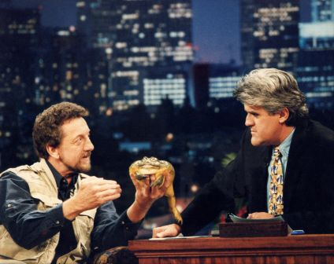

Clyde Peelings Reptile Land is a local Zoo or atraction that is about 30 mins. south of the city of Williamsport. This local and little zoo houses the biggest
attraction locally of anything that is considered a reptile, and was considered a reptile
Clyde Peelings Reptile Land was made and started back in July of 1964, and has been running since. their mission to bring to the Pennsylvania area was to show off these big
and dangerous animals and to educate the public about it.
The Owner Clyde peelings made headlines and started to franchise the company to educate more people around the US, he even made headlines
by going on the Tonight Show with Jay Leno.

In 2011 Clyde peeling decided to add a new exhibit where at the time was the biggest and most intresting for its size, which was called
Dinosaurs come to life. In this exhibit they made real life dinosaur animatronics that were life sized of actual dinosaurs, imagine being underneath
being under a 30ft. tall T-rex, well here you can.
Sadly though in 2019, Clyde Peeling passed away after a struggle for 3 years of fighting with a brain tumor that was unoperable and left the buisness to his family.
But since then and even after COVID-19 hit their buisness, they are still an up and running buisness that still brings in many people to gaze and awe
at the attractions and animals Clyde Peeling had worked so hard on.
Here is a video that Clyde Peeling has made to show exactly what Reptile Land means to him and hopes to accomplish educating the yound and old